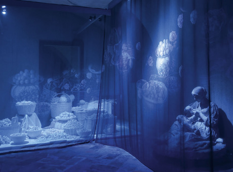

18 Синяя комната. Поиск своей традиции
Вчера, когда медитировала, почувствовала себя очень длинной.. словно весь мой позвоночник был длиной от центра земли до звезд.
Когда читаю некоторые мантры и тексты, чувствую внутренний огонь. Как-то раз Шри Гуру Гита прочиталась на такой горячей волне, что я не могла остановиться, перестать читать, это был удивительный энергетический поток...
И вместе с тем, я чувствую в этих практиках вторжение чужого в мой мир?
Это Индия, чужая земля. Видимо, чтобы оно стало своим, надо там родиться или хотя бы прожить долгое время.
Как мне найти СВОЮ традицию? Иногда словно удается ухватить ящерицу, но в следующий миг она ускользает, оставляя на твоей руке лишь хвостик - ощущение присуствия чего-то очень родного. Прихожу в лес и чувствую, что вот оно - совсем рядом - протяни руку, и оно твоё...
Невероятно, но факт: как только я начала погружаться в восточные практики с головой, я заболела. А немного "отодвинулась" от той традиции - сразу себя лучше почувствовала. Или это совпадение?
Сегодня проснулась на заре. Впервые на меня именно во время просмотра свалилось странное ощущение.. пустоты. Нет, не опустошенности. Наоборот, легкой пустоты, когда за собой не тащишь воз всего на свете, когда не сразу вспоминаешь, кто ты для этого мира, как твоё имя, но при этом внутреннее я никуда не исчезает. Я это я. Остальное - не важно. Образовалось словно "священное пространство", теменос, как бы сказали греки... некая моя комната, за которой я словно сняла одежду, оставила всю себя, свое прошлое, весь багаж передуманного, увиденного, услышанного.. все ушло. Осталась только я. Как вечный наблюдатель. Как "присутствие". И потом на протяжении дня периодически ловила это ощущение. Смотрела в небо и растворялась. Я была и меня не было.
Мне кажется, вообще не надо никакой йоги, никакого кундалини, никакой медитации... просто все это выкинуть, оставить за дверкой, а самой уйти в это священное пространство.
И как я умудрялась еще как-то поднимать энергию с таким грузом самой себя?
Возможно, поэтому она поднималась так неохотно. Вместе с энергией я пыталась поднять всю себя. Даже "успокоив мысли", я все равно каждый раз снизу вверх поднимала "всю себя", со всем пережитым, передуманным, перечувстованным...
Надо просто все выбросить и уйти в священное пространство. Пусть внутренний свет делает свое дело. Зачем строить огромные алюминиевые бандуры, если достаточно просто выкинуть лишний вес и полетишь сам?
Освободиться. забыть. чувствовать. наблюдать.
Теменос. Священное пространство. Моя "синяя комната", которую я видела во сне летом на даче. Странный сон, навеяный чьим-то "присутствием". Внутри меня возникло понимание - это место "выхода". Выхода куда?
Там, где кончается слабость, начинается сила.. там, где кончается сила, начинается слабость...
Я стремлюсь быть сильной. Я боюсь быть слабой - в этом моя слабость.
Мне надо чувствовать внутри меня силу, поскольку порой мне не на что больше опереться, кроме себя. Я не ищу опору в мире и ничего от него не жду. Если что-то получаю - благодарна. Если мне нужна поддержка - ищу её в "присутствии". Чье это присутствие - не знаю. С ним я чувствую связь в точке между глаз, в частности, когда смотрю в небо.Чувствую, что "оно" слышит меня, даже ругает за неправильные мысли, посылая в ответ странные "диссонансы". Я его не понимаю. Понимаю, когда гладят по головке. Понимаю, когда говорят "ай-яй-яй". Задаю вопрос... а ответ на него получаю вообще из другого источника. Видимо, там существует какой-то хитроумный закон неких "лифтов" - спросил там, а ответ на свой вопрос услышал у случайно проходящей мимо бабушки.
Или это я уже схожу с ума?
Из области юмора:
Психоз. Ты разговариваешь с кошкой.
Галлюцинаторный психоз. Ты разговариваешь с несуществующей кошкой.
Шизофрения. Кошка говорит внутри тебя.
Мой случай. Я разговариваю с кошкой. Кошка мне отвечает. Кошку кроме меня никто не видит...
Как попросить кошку, чтобы она в кои веки ответила по-человечески? А то спрашиваешь, а она отвечает, по-своему только, по-кошачьи. Как умеет.
Черт возьми, я хочу еще раз поднять эту энергию! Ощущение непередаваемое.. сначала чувствуешь, словно тебя подбрасывает над собой - в последний "сильный" раз это началось, когда я добралась до горловой чакры и слога "хаум" - прямо словно вот-вот и тебя выкинет из себя куда-то наружу. Чувствуешь себя "за границами себя", если так можно выразиться. Так оно начиналось.. правда, частенько, на этом оно и заканчивалось. Потом странное ощущение, словно, когда думаешь о "лаум", толкаешь "свет" сверху вниз, и там вдруг начинается какая-то термоядерная реакция, словно кислоту смешали с щелочью, погасили туеву хучу соды, и ей просто некуда деваться, она "выстреливает" вверх по позвоночнику. Ощущение непередаваемое... хотя, был разок и жутковатый... мягко сказано, жутковатый. Ощущение было такое, словно тебе на позвоночник поставили горячущий горчичник, причем изнутри, словно лава поднимается, страшно, чем это кончится.
Однако, ничем плохим это не кончилось. Видимо, не готова я была к сему и эта самая энергия сжигала все лишнее. А к какому из моих экспериментов я хоть раз была готова?
Как мне понять кошку?
Стою у стенки со стаканом. Слышу. Понять бы еще, что слышу. Декодера не хватает.
Строю лестницу в небо. Строю на свой страх и риск по отрывочной информации, по большей части относящейся к другой широте и долготе. И ведь ни одна зараза не предупредит, что она будет так раскачиваться, и что кто-нибудь, внизу, обязательно подойдет с пилой. Нет, он вовсе не хочет, чтоб ты упала. Ему просто охота уворовать чуток древесины. А наверх голову никто не поднимает. Кому какое дело, чего там наверху болтается...
Брожу в потемках по многоярусному лабиринту. Иду на мерцающий свет. Бежать не могу - везде ямы, ловушки. Иногда свет мерцает в конце дороги, а между им и тобой - зияющая пустота. Пропасть. Иногда, чтоб перебраться, надо дойти до самого дна... но спускаясь все ниже, спрашиваешь себя, не бесконечная ли она.. нет ли другого пути. Может, этот путь длиннее моей жизни? иногда уже отчаешься, бежишь по дорожке в темноте, не думая о том, что под ногами, и проваливаешься в яму... и оказываешься на несколько ярусов ниже, и опять встаешь и начинаешь подъем.. все сначала, все на смарку.. А иной раз, отчаившись и провалившись, падаешь на пружину, и она тебя подбрасывает на несколько ярусов вверх.. иногда, лишь отчаившись, находишь...
Кошка, я готова идти, несмотря ни на что, только подай мне знак!
Что заставляет идти в кромешную тьму, когда впереди не видишь свет?
Вера?
Вера во что?
В Бога, не принадлежащего ни одной религии, но отражающегося в каждой из них, да и вообще, во всем на свете...
В чьё-то "присуствие"? В "кошку"?
И все-таки, как же хочется поднять энергию с низа позвоночника до самой макушки!
Просто, когда практики получались, ночной страх того, что все скоро закончится, отступил. А до этого он периодически меня сопровождал. Страшное чувство, время течет сквозь пальцы, жизнь проходит... А ты так еще и не дошел.. и куда - ты сам не знаешь. До одной безумной мечты.
Дай мне знак, прошу... и я пойду в кромешную тьму.
Кошка, я люблю тебя!
Но пусть это мираж, пусть я вижу отблеск жестянки... пусть так! Но ведь если есть отблеск, значит, где-то все-таки есть свет! Если это - мираж, значит, где-то все-таки есть оазис...
